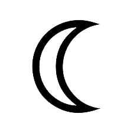

La Luna
La luna
La Luna es el único satélite natural de la Tierra. Con un diámetro ecuatorial de 3474 km, es el quinto satélite más grande del sistema solar
No te dejes engañar! En realidad la Luna están muy lejos. La luna tiene un promedio de 238,855 millas (384,400 km) de distancia.